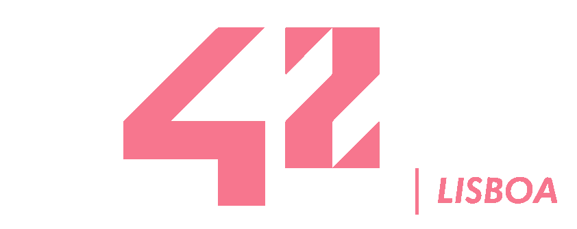

Welcome!
take a debugger and enjoy...
Project: Rush00
This project consisted on creating a grid with a custom input size. so for example, an input of (5,3) would display:

In ex01, the same input would display:

Try it yourself!
This is a javascript version of the C code
Ex00
Ex01
About 42
Founded in Paris in 2013, today 42 has more than 10.000 students in
over 20 countries, and is recognized as one of the best coding schools
worldwide. The school’s practical approach, based on peer-to-peer
collaboration, guarantees both excellent technical training and the
development of valuable soft skills, such as the ability to work in
teams, problem-solving, adaptation, determination, and resilience.
- 42lisboa.com/en/about/
Skills Developed
#Unix
In 42 we start by learning the basics of shell scripting, mkdir, ls, cd, text formating and file manipulation.
#C Language
The whole piscine and first part of the 42 cursus language is C: Fundamentals such as variable types, pointers, memory allocation, macros, creating libraries, functions and programs.
#Git
All the projects are sent for review by using git, this practice makes us, students, confortable with such system, making it easy to work as a team.
License: MIT License
Copyright (c) [2021] [Nelson Duarte]
Permission is hereby granted, free of charge, to any person obtaining a copy of this software and associated documentation files (the "Software"), to deal in the Software without restriction, including without limitation the rights to use, copy, modify, merge, publish, distribute, sublicense, and/or sell copies of the Software, and to permit persons to whom the Software is furnished to do so, subject to the following conditions:
The above copyright notice and this permission notice shall be included in all copies or substantial portions of the Software.
THE SOFTWARE IS PROVIDED "AS IS", WITHOUT WARRANTY OF ANY KIND, EXPRESS OR IMPLIED, INCLUDING BUT NOT LIMITED TO THE WARRANTIES OF MERCHANTABILITY, FITNESS FOR A PARTICULAR PURPOSE AND NONINFRINGEMENT. IN NO EVENT SHALL THE AUTHORS OR COPYRIGHT HOLDERS BE LIABLE FOR ANY CLAIM, DAMAGES OR OTHER LIABILITY, WHETHER IN AN ACTION OF CONTRACT, TORT OR OTHERWISE, ARISING FROM, OUT OF OR IN CONNECTION WITH THE SOFTWARE OR THE USE OR OTHER DEALINGS IN THE SOFTWARE.